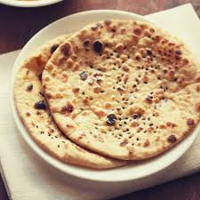

Menu List
paneer tikka
masala

Paneer makhani (also called paneer butter masala) is a slightly sweet creamy dish of paneer, originating from the Indian subcontinent, in which the gravy is prepared usually with butter (makhan), tomatoes, cashews or cream.[1] Spices such as red chili powder and garam masala are also used to prepare this gravy.
veg kolhapuri

Vegetable kolhapuri is a dish from the city of Kolhapur in Maharashtra, India consisting of mixed vegetables in a thick, spiced gravy. It is served as a main course accompanied by breads such as chapatis.
dal tadka

Dal (also spelled daal; pronunciation: [d̪aːl]) is a term used in the Indian subcontinent for dried, split pulses (that is, lentils, peas, and beans) that do not require pre-soaking. The term is also used for various soups prepared from these pulses. These pulses are among the most important staple foods in South Asian countries, and form an important part of the cuisines of the Indian subcontinent.
nan
Naan in parts of the Indian subcontinent usually refers to a specific kind of thick flatbread (another well-known kind of flatbread is chapati). Generally, it resembles pita and, like pita bread, is usually leavened with yeast or with bread starter (leavened naan dough left over from a previous batch); unleavened dough (similar to that used for roti) is also used. Naan is cooked in a tandoor, from which tandoori cooking takes its name.